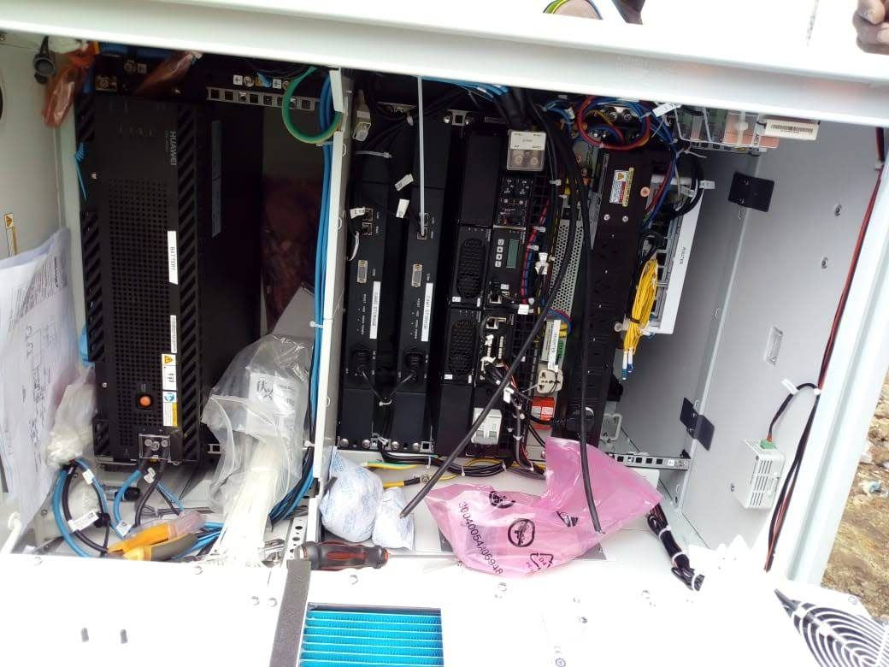
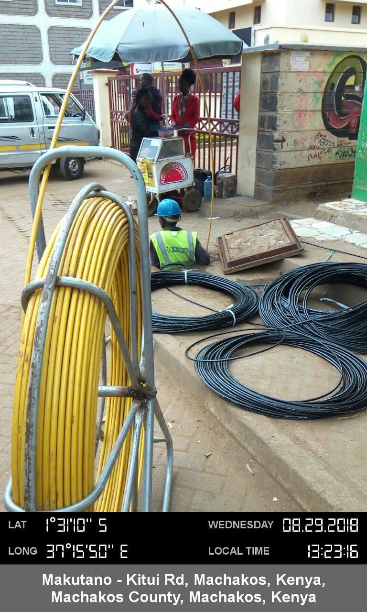

SECURITY & SOLAR PROJECT
Installation of CCTV cameras and solar-powered street lighting as part of the Konza Digital City project.
Search intent: CCTV installation Kenya, solar street lighting Kenya.
Read project record →ICT & DATA INFRASTRUCTURE
Internal cabling works for the data centre at Dedan Kimathi University of Technology.
Search intent: data centre cabling Kenya, structured cabling contractor.
Read project record →FIBRE INFRASTRUCTURE PROJECT
Fibre infrastructure works covering trenching, cable pulling, fibre cable testing and OTD core works.
Search intent: NOFBI fibre installation, fibre trenching Kenya.
Read project record →POWER INFRASTRUCTURE PROJECT
Construction of power lines, including transformer installations, for a Last Mile Connectivity project.
Search intent: last mile connectivity Kenya, power line and transformer installation.
Read project record →TELECOM SOLAR PROJECT
Solar power installation works for Safaricom base transceiver station (BTS) sites.
Search intent: Safaricom BTS solar installation, telecom solar Kenya.
Read project record →HUMANITARIAN SECTOR SOLAR
Multi-site solar PV, battery storage and backup generator installation for clinics, schools and field posts in Turkana County.
Search intent: solar electrification Turkana, off-grid solar Kenya, NGO solar installation Kenya.
Read project record →FIBRE ROLLOUT PROJECT
Fibre trenching, duct installation and splicing works across Uasin Gishu and Machakos Counties.
Search intent: fibre optic installation Kenya, fibre trenching Eldoret, fibre installation Machakos.
Read project record →